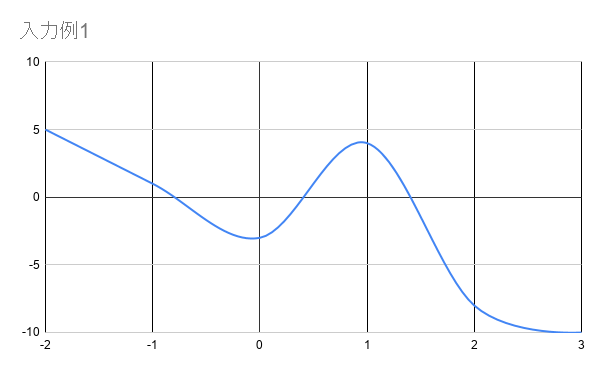

【Darjeeling】 - Happiness function 【配点：100 点】
問題文
ポリアンナちゃんは P ≦ x ≦ Q の範囲で多項式関数を描き、「自分が描いた多項式関数のX軸との交点の数がT以上」という条件を満たす関数を
Happiness function と定義しました。
非負整数Tとポリアンナちゃんが描いた多項式関数上におけるP ≦ x ≦ Q
にかけてのx座標Xi、y座標Yiが与えられます。
ポリアンナちゃんの描いた多項式関数が Happiness function かどうかを判定してください。
ただし、x座標をK(Kは整数)としたとき、KとK+1間での交点の数は2個以上存在しないものとする。
また、接点は存在しないものとする。
制約
・0 ≦ T ≦ Q - P ≦ 2×105
・-105 ≦ P
< Q ≦ 105
・P ≦ Xi ≦ Q
・-106 ≦ Yi ≦ 106
・Yi ≠ 0
・Xi=P+i
入力
入力は以下の形式で標準入力から与えられる。
T P Q
X0 Y0
…
XQ-P YQ-P
出力
ポリアンナちゃんの描いた多項式関数が Happiness function であれば "Yes" そうでなければ "No"
と出力せよ。
入力例1
2 -2 3
-2 5
-1 1
0 -3
1 4
2 -8
3 -10
出力例1
Yes
このケースでのグラフは以下のようになります。

X軸との交点は3つなのでHappiness functionであるといえます。
入力例2
2 -1 1
-1 -1
0 3
1 7
出力例2
No